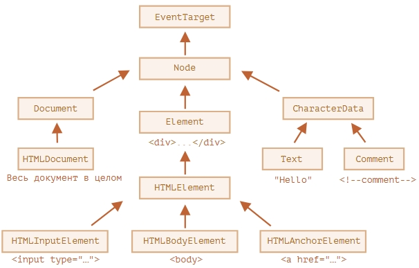

Подробное рассмотрение узлов
Ниже идёт описание классов на специальном языке похожем на C#++, но это не язык програмирования.
Диаграмма наследования классов:

Для того, чтобы узнать имя класса DOM-узла, вспомним, что обычно у объекта есть свойство constructor. Оно
ссылается на конструктор класса, и в свойстве constructor.name содержится его имя:
…Или мы можем просто привести его к строке:
alert( document.body.constructor.name ); // HTMLBodyElement
alert( document.body ); // [object HTMLBodyElement]
Так же можно проверить цепочку наследования:
alert( document.body instanceof HTMLBodyElement ); // true
alert( document.body instanceof HTMLElement ); // true
alert( document.body instanceof Element ); // true
alert( document.body instanceof Node ); // true
alert( document.body instanceof EventTarget ); // true
console.dir(elem) выводит элемент в виде DOM-объекта, что удобно для анализа его свойств.
Есть ещё один способ узнать тип Node-узла:
В современных скриптах, чтобы узнать тип узла, мы можем использовать метод instanceof и другие способы проверить класс, но иногда nodeType проще использовать. Мы не можем изменить значение nodeType, только прочитать его.
Например:
alert( document.body.nodeName ); // BODY
alert( document.body.tagName ); // BODY
Разница в том, что nodeName возвращает имя ноды, а tagName имя тега, если его нет, то возвращается undefined.
Получение содержимого в виде строки, если там есть теги, то покажет и их:
Скрипты не выполнятся
Если innerHTML вставляет в документ тег <script> – он становится частью HTML, но не запускается.
Так как содержимое «обнуляется» и переписывается заново, все изображения и другие ресурсы будут перезагружены.
Свойство outerHTML содержит HTML элемента целиком. Это как innerHTML плюс сам элемент.
Попытка вывести текущий раздел привела к undefined
Здесь легко сделать ошибку: заменить div.outerHTML, а потом продолжить работать с div, как будто там новое содержимое. Но это не так. Подобное верно для innerHTML, но не для outerHTML.
Мы можем писать в elem.outerHTML, но надо иметь в виду, что это не меняет элемент, в который мы пишем. Вместо этого создаётся новый HTML на его месте. Мы можем получить ссылки на новые элементы, обратившись к DOM.
nodeValue/data: содержимое текстового узла У других типов узлов, в частности, у текстовых, есть свои аналоги:
свойства nodeValue и data.
Свойство textContent предоставляет доступ к тексту внутри элемента за вычетом всех <тегов>.
На практике редко появляется необходимость читать текст таким образом.
Намного полезнее возможность записывать текст в textContent, т.к. позволяет писать текст «безопасным
способом».
Разница с innerHTML:
let name = prompt("Введите ваше имя?", "<b>Винни-пух!</b>");
elem1.innerHTML = name;
elem2.textContent = name;
Свойств много, посмотреть можно через console.dir(elem), и прочитать все свойства. Или исследовать «свойства DOM» во вкладке Elements браузерных инструментов разработчика.
Главные свойства DOM-узла:
Пройдём циклом по всем элементам <li>:
for (let li of document.querySelectorAll('li')) {
...
}
В цикле нам нужно получить текст в каждом элементе li. Мы можем прочитать текстовое содержимое элемента
списка из первого дочернего узла li, который будет текстовым узлом:
for (let li of document.querySelectorAll('li')) {
let title = li.firstChild.data;
// переменная title содержит текст элемента
}
Так мы сможем получить количество потомков как li.getElementsByTagName('li').length.